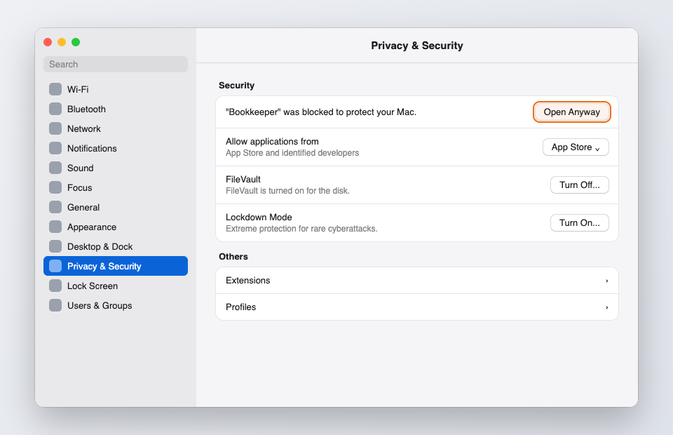

Install
Bookkeeper needs macOS 14 or newer, on a Mac with Apple silicon (M1 or later). It does not run on Intel Macs.
- Download
Bookkeeper.zipfrom the latest release on GitHub. - Double-click the zip to unpack it. You get
Bookkeeper.app. - Drag
Bookkeeper.appinto your Applications folder. - Open it. The first time, macOS will hesitate. See below.
Why macOS hesitates
Bookkeeper is signed ad hoc. The House of Helios does not pay for an Apple developer account, so Apple has not vouched for the app, and macOS says so on first open. Nothing is wrong with the file. The check is just a toll the House chose not to pay.
You only have to do this once.
On macOS 15 and newer: System Settings
- Try to open the app once, and let macOS refuse. Click Done.
- Open System Settings, then Privacy & Security.
- Scroll down to the message about Bookkeeper and click Open Anyway, then confirm.

On macOS 14: right-click
- In Applications, right-click
Bookkeeper.app. - Choose Open.
- In the dialog, click Open again.
The System Settings way works on macOS 14 too.
After that, it opens like any other app. Later versions arrive from inside the app; see Updates.